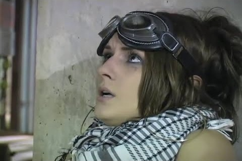

Movie review by : Mr. Roboto
Year : 2008
Directed by : Mohamed Talaat
Written by : Erden Zikibay
Degree of Cyberpunk visuals : High
Correlation to Cyberpunk themes : High
Rating : 7/10
Key cast members :

Any similarities between this and certain movies... was probably intended.
Overview: Somewhere is a budding Steven Spielberg, Riddley Scott, Cecil B. DeMille, or Laszlo Kovacs sitting in a classroom, secretly (or not-so-secretly) dreaming up the next Blade Runner or Matrix, or some similar mash-up of cyberpunk media. Erden Zikibay and Mohamed Talaat make their case with this cyberpunk short.
The Story: It's mid-21st century and Earth government begins an ambitious space exploration endeavor, but getting people to join the effort proves difficult... until they revive an old institution: slavery.
I'm going to stop it there since you are already familiar with Blade Runner (and if you're not, WHAT THE FUCK IS WRONG WITH YOU???). Forbidden Dreams draws heavily on Blade Runner, and to a lesser extent, The Matrix (the hunters' outfits and shades). There's no Roy Batty speech at the end, but a quote from Phillip K. Dick that makes the connection obvious.
Being a student film, the quality is far from the multi-megadollar Hollywood fare. But for its ten minute run, they use what they had to its best effects.
The Bottom Line: You have to give Erden and Mohamed credit: To make a low-budget version of a legendary movie takes some balls. Hopefully they got A's for their effort.
For the rest of us, Forbidden Dream would probably be best described as the Cliffs Notes to Blade Runner: it gives you the basic idea behind BR in a ten minute snippet, but you really need to see the full movie, if only for Roy Batty's death speech.